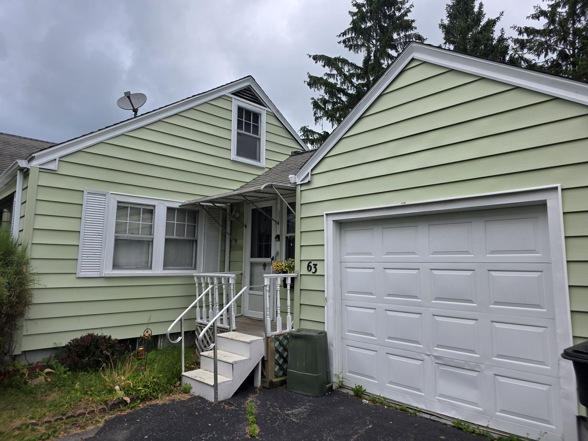
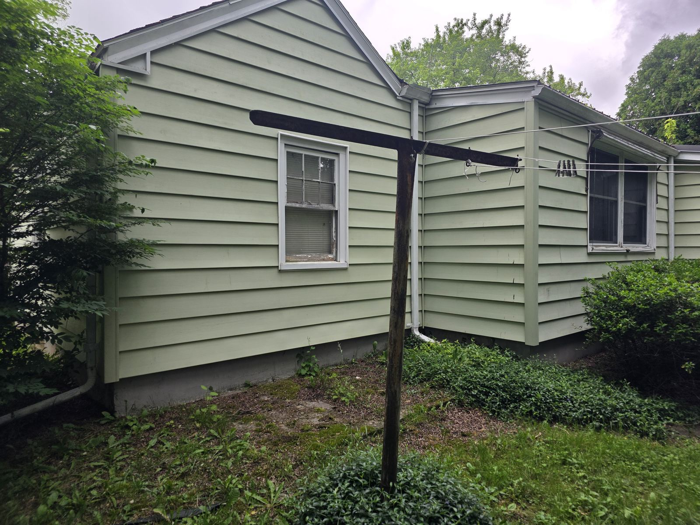
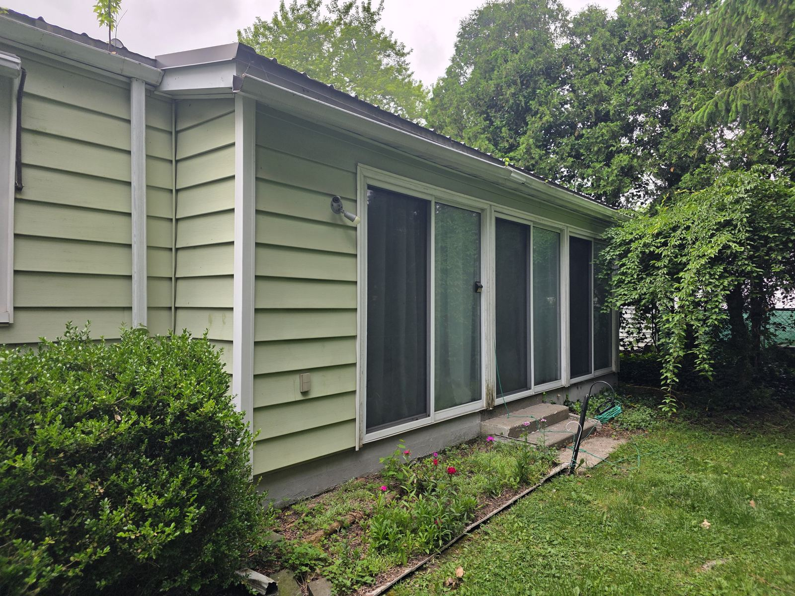
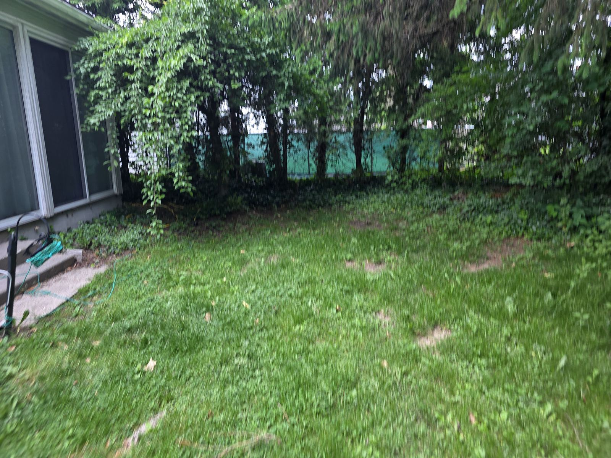

Geneva, New York • Seneca Lake region
Vintage warmth, clean lines, and room to make it yours.
A classic mid-century home near Seneca Lake, downtown Geneva, and Hobart and William Smith Colleges.
Classic, practical, and full of possibility.
Warm wood tones, practical rooms, vintage character, and flexibility for the next owner to shape it without erasing what makes it interesting.
Why it works
Vintage warmth
Wood tones, texture, and period character.
Useful rooms
Practical spaces for everyday living, work, guests, and hobbies.
Room to personalize
Existing character with flexibility to adapt over time.
Photos
Upload photos into public/assets as hero.jpg and photo-01.jpg through photo-08.jpg.




Contact
Use the private form below for questions or showing interest.